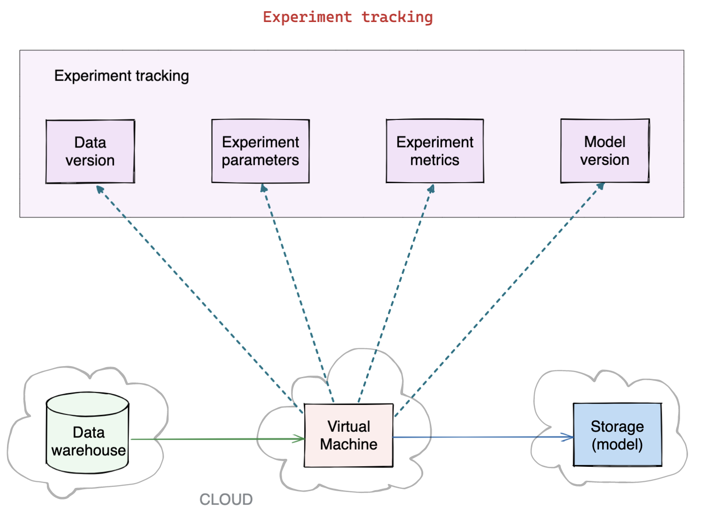
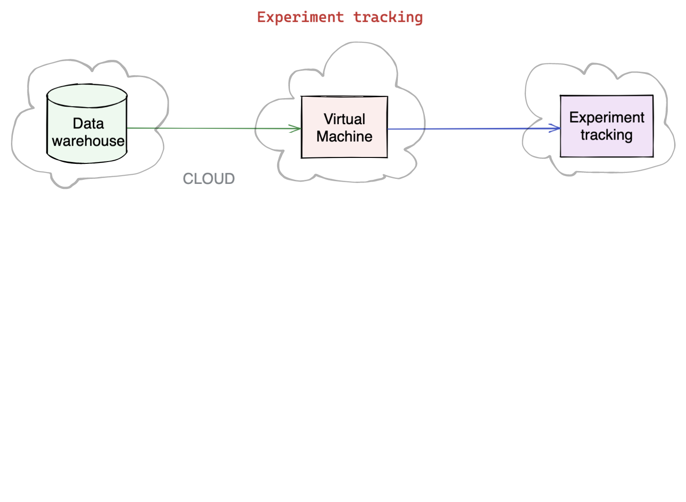
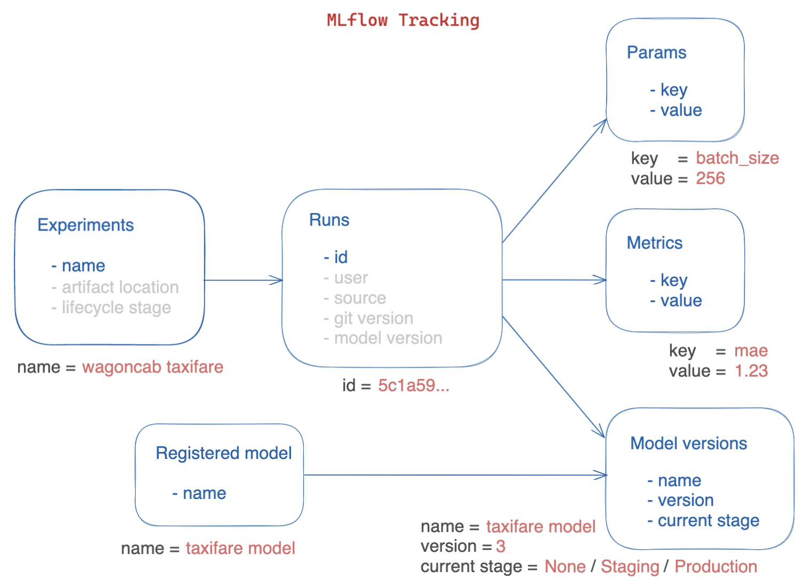
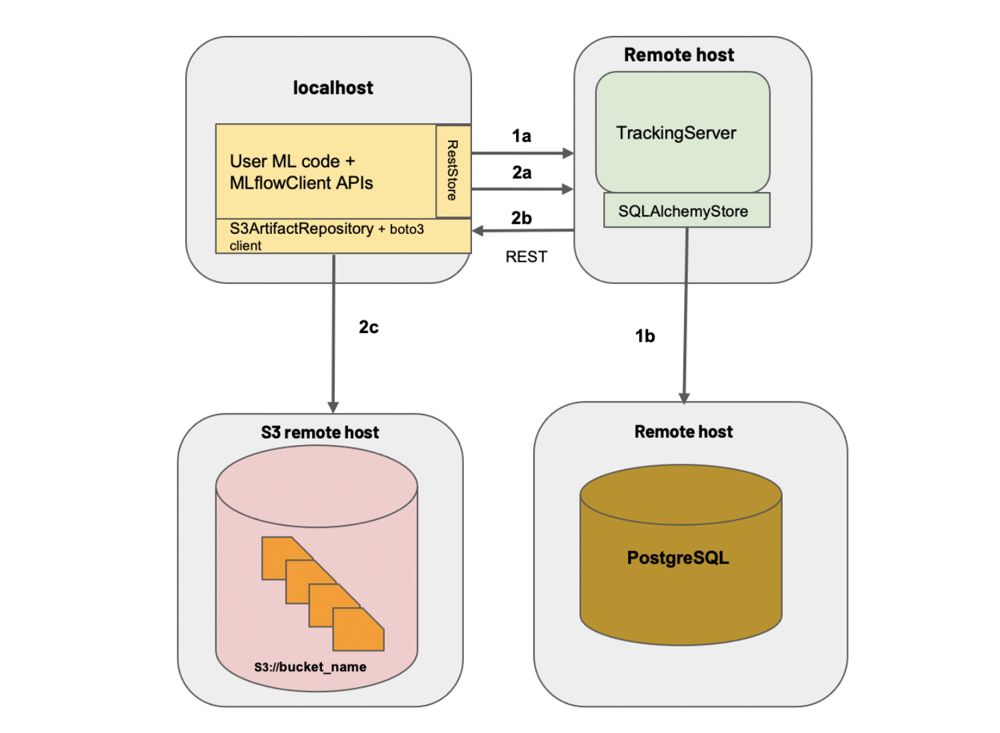
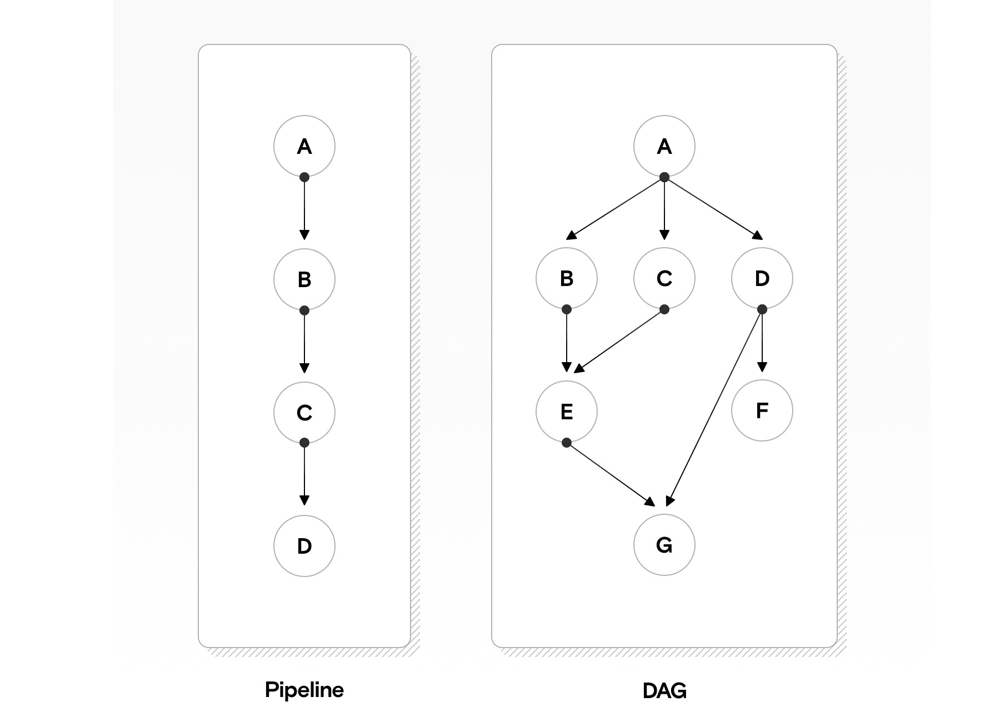
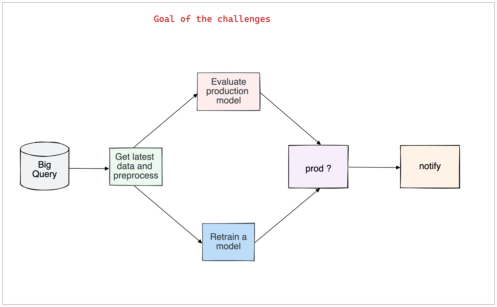
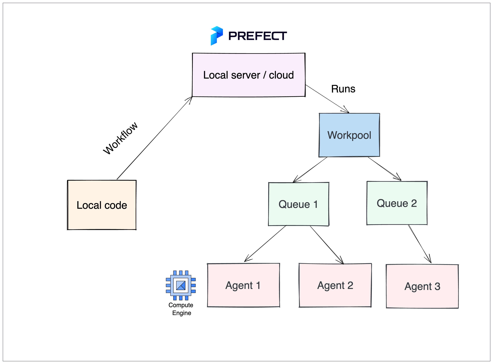

Automate Model Lifecycle
Mettre en place un cycle de vie ML robuste — tracker les expériences (paramètres, métriques, modèles) avec MLflow, puis automatiser le workflow d'entraînement et de déploiement avec Prefect.
📋 Cheatsheet — Automate Model Lifecycle
MLflow — Experiment Tracking
import mlflow
## Configurer le serveur MLflow
mlflow.set_tracking_uri("https://mlflow.lewagon.ai") # URL du serveur
mlflow.set_experiment(experiment_name="wagoncab taxifare") # nom de l'expérience
## Logger une expérience
with mlflow.start_run():
params = dict(batch_size=256, row_count=100_000)
metrics = dict(rmse=0.456)
mlflow.log_params(params) # log les hyperparamètres
mlflow.log_metrics(metrics) # log les métriques
mlflow.tensorflow.log_model(
model=model,
artifact_path="model",
registered_model_name="taxifare_model" # enregistre le modèle
)
## Charger un modèle depuis le registry
model_uri = "models:/taxifare_model/Production" # nom/stage
model = mlflow.tensorflow.load_model(model_uri=model_uri)Prefect — Workflow Automation
from prefect import task, flow
@task # décorateur : transforme la fonction en tâche Prefect
def preprocess():
pass
@task
def train():
pass
@task
def evaluate():
pass
@flow # décorateur : transforme la fonction en workflow
def taxifare_lifecycle():
preprocess.submit() # soumet la tâche
eval_future = evaluate.submit() # soumet en parallèle
train_future = train.submit(wait_for=[eval_future]) # attend evaluate avant de lancer train
if __name__ == '__main__':
taxifare_lifecycle() # lance le workflow## Prefect Cloud
prefect cloud login # connexion au cloud
prefect agent start -q 'default' # démarre un agent local
## Prefect self-hosted
prefect server start # démarre le serveur local
prefect config set PREFECT_API_URL=http://127.0.0.1:4200/api
prefect agent start -q 'default'⚠️ Récapitulatif — Erreurs clés à éviter
Ne pas tracker les expériences et comparer les modèles de mémoire
Sans tracking, il est impossible de reproduire un résultat ou de comparer objectivement deux modèles.
❌ Entraîner 10 modèles et noter les résultats sur un post-it
✅ Logger systématiquement params, metrics et model avec MLflow à chaque run
Oublier de versionner les données utilisées pour l'entraînement
Un modèle n'est reproductible que si on connaît les données exactes sur lesquelles il a été entraîné.
❌ Entraîner sur "les données du moment" sans tracer la période ou la taille
✅ Logger start_date, end_date, row_count dans les params MLflow (ou utiliser DVC)
Ré-entraîner automatiquement sans évaluer le modèle existant
Un nouveau modèle n'est pas forcément meilleur — il faut comparer avant de remplacer.
❌ Workflow : preprocess → train → deploy (sans évaluation)
✅ Workflow : preprocess → evaluate ancien modèle → si dégradé : train → compare → deploy si meilleur
Confondre MLflow et Prefect — tracking vs orchestration
MLflow track les résultats d'expériences. Prefect orchestre l'exécution du workflow.
❌ Utiliser MLflow pour planifier des tâches récurrentes
✅ MLflow = "qu'est-ce qui s'est passé ?" | Prefect = "quand et comment ça s'exécute ?"
Laisser un agent Prefect tourner sans monitoring
Un agent qui tourne en continu consomme des ressources et peut exécuter des workflows défaillants en boucle.
❌ prefect agent start sur une VM sans alertes ni logs
✅ Configurer des notifications d'échec dans Prefect et monitorer les logs de l'agent
1) Objectif — Cycle de vie ML robuste
1.1 Problèmes sans automatisation
- Le modèle doit s'adapter en continu au marché (données qui évoluent)
- L'entraînement manuel ne passe pas à l'échelle
- Sans tracking, pas de reproductibilité ni de comparaison
1.2 Ce qu'on veut
Un lifecycle automatisé et traçable :
- Tracker les expériences (paramètres, métriques, modèle)
- Versionner les modèles (staging, production)
- Automatiser le workflow (preprocessing → évaluation → entraînement → déploiement)

2) Experiment Tracking avec MLflow
2.1 Quoi tracker ?
| Catégorie | Exemples |
|---|---|
| Paramètres | Version du code (git SHA), hyperparamètres, type de preprocessing, batch_size |
| Métriques | RMSE, MAE, R², accuracy, F1 |
| Modèle | Poids entraînés, version, stage (staging/production) |
| Données | start_date, end_date, row_count (ou DVC pour le versioning complet) |

2.2 Architecture MLflow

- MLflow Server : stocke les données de tracking (DB) et les modèles (file storage)
- MLflow UI : interface web pour visualiser et annoter
- MLflow Code : package Python
mlflowpour logger depuis le code
2.3 Logger une expérience
import mlflow
mlflow.set_tracking_uri("https://mlflow.lewagon.ai")
mlflow.set_experiment("wagoncab taxifare")
with mlflow.start_run():
mlflow.log_params(dict(batch_size=256, row_count=100_000))
mlflow.log_metrics(dict(rmse=0.456))
mlflow.tensorflow.log_model(
model=model,
artifact_path="model",
registered_model_name="taxifare_model"
)2.4 Charger un modèle versionné
model_uri = "models:/taxifare_model/Production" # stage = Production, Staging, etc.
model = mlflow.tensorflow.load_model(model_uri=model_uri)MLflow supporte les model stages : un modèle peut passer de Staging à Production via l'UI ou le code, facilitant le déploiement progressif.

3) Automatiser le Lifecycle avec Prefect
3.1 Workflow du modèle
Le cycle de vie d'un modèle est une séquence de tâches interdépendantes formant un DAG (Directed Acyclic Graph) :

- Récupérer les nouvelles données
- Évaluer la performance du modèle actuel
- Si dégradée → entraîner un nouveau modèle
- Comparer nouveau vs ancien
- Si meilleur → promouvoir en production

La décision de ré-entraîner dépend du contexte métier : performance passée, coût d'entraînement, temps disponible. Certaines décisions ne peuvent pas être automatisées.
3.2 Prefect — Composants
- Prefect Server : stocke les exécutions et résultats (local ou cloud)
- Prefect UI / CLI : visualisation et paramétrage
- Prefect Code : décorateurs
@tasket@flowpour définir le workflow
3.3 Code Prefect
from prefect import task, flow
@task
def preprocess_new_data():
pass
@task
def evaluate_production_model():
return 0.85 # score actuel
@task
def train_new_model():
return 0.90 # score du nouveau modèle
@flow
def taxifare_lifecycle():
preprocess_new_data.submit()
eval_future = evaluate_production_model.submit()
eval_score = eval_future.result()
if eval_score < 0.80: # seuil de ré-entraînement
train_future = train_new_model.submit()
new_score = train_future.result()
if __name__ == '__main__':
taxifare_lifecycle()3.4 Déploiement Prefect
## Option 1 : Prefect Cloud (gratuit, limité à 7 jours d'historique)
prefect cloud login
prefect agent start -q 'default'
## Option 2 : Self-hosted
prefect server start
prefect config set PREFECT_API_URL=http://127.0.0.1:4200/api
prefect agent start -q 'default'3.5 Agents et queues

Les agents tirent les tâches depuis des queues — on peut diriger les tâches GPU vers une queue dédiée et les tâches légères vers une autre.
Prefect gère les échecs (retry), les notifications, l'exécution parallèle et distribuée. Courbe d'apprentissage plus rapide qu'Airflow. 👉 Prefect vs Airflow
📚 Bibliographie
- 👉 MLflow Tracking documentation
- 👉 MLflow Model Registry
- 👉 DVC — Data Version Control
- 👉 Prefect documentation
- 👉 Prefect Cloud
- 👉 Prefect vs Airflow
🚀 Challenges
- Tracker les paramètres, métriques et modèles avec MLflow sur le serveur Le Wagon
- Formaliser le workflow de lifecycle du modèle TaxiFare en tâches Prefect
- Automatiser l'exécution du workflow avec un agent Prefect
🧭 Introduction
Contexte : pourquoi automatiser le cycle de vie d'un modèle ?
Imaginer qu'on entraîne un modèle de Machine Learning aujourd'hui pour prédire le prix d'une course de taxi. Ce modèle fonctionne bien. Mais dans six mois, les habitudes changent, les prix augmentent, de nouvelles zones apparaissent. Le modèle se dégrade — et si personne ne s'en aperçoit, c'est silencieusement que les prédictions deviennent mauvaises.
Le cycle de vie d'un modèle ML (ou "model lifecycle") désigne tout ce qui entoure un modèle : son entraînement, son évaluation, son versioning, son déploiement, sa surveillance, et sa mise à jour. Sans automatisation, tout cela se fait à la main — ce qui est lent, non reproductible, et sujet aux erreurs.
Deux outils permettent de structurer ce cycle :
- MLflow : pour tracker les expériences (sauvegarder les paramètres, les métriques, les modèles) et versionner les modèles.
- Prefect : pour orchestrer le workflow d'entraînement (définir les étapes, les enchaîner, les automatiser).
5 points à retenir avant de commencer
- Un modèle ML a besoin d'être mis à jour régulièrement — les données du monde réel évoluent.
- Sans tracking, il est impossible de reproduire un résultat ou de comparer deux modèles objectivement.
- MLflow et Prefect ont des rôles distincts et complémentaires : l'un archive, l'autre orchestre.
- Le versioning des modèles permet de passer d'un modèle en "test" à un modèle "en production" de façon contrôlée.
- Automatiser ne veut pas dire "sans réflexion" — certaines décisions (ré-entraîner ou pas) dépendent du contexte métier.
Analogie fil rouge : l'usine automatisée
Imaginer une usine qui fabrique des voitures. Chaque voiture sortante est inspectée, ses données de production sont enregistrées (temps, matériaux, défauts), et si la qualité baisse, la chaîne de montage est ajustée automatiquement.
Dans notre contexte ML :
- MLflow = le cahier de bord de l'usine (on note tout ce qui se passe à chaque fabrication)
- Le model registry = le catalogue officiel des versions de voitures approuvées (staging, production)
- Prefect = la chaîne de montage automatisée (les étapes s'enchaînent sans intervention humaine)
Mini-plan du cours
- Pourquoi le cycle de vie ML est un problème
- Tracker les expériences avec MLflow
- Versionner les modèles avec le Model Registry
- Automatiser le workflow avec Prefect
1. Pourquoi le cycle de vie ML est un problème
1.1 Les problèmes sans automatisation
Sans outils dédiés, voici ce qui arrive concrètement :
- On entraîne 10 variantes d'un modèle en changeant des paramètres. On note les résultats dans un fichier texte ou sur un post-it. Une semaine plus tard, on ne sait plus quelle configuration donnait quel résultat.
- On déploie un modèle en production. Trois mois plus tard, les performances se dégradent. On n'a aucun historique pour comprendre ce qui a changé.
- On veut ré-entraîner le modèle sur de nouvelles données. On ne sait plus exactement sur quelles données l'ancien modèle a été entraîné.
Sans tracking, il est impossible de reproduire un résultat ou de comparer deux modèles de façon objective. C'est comme faire des expériences scientifiques sans noter ses résultats.
1.2 Ce qu'on veut construire
Un cycle de vie automatisé et traçable en 3 étapes :
- Tracker — enregistrer tout ce qui se passe lors de chaque entraînement (paramètres, métriques, modèle)
- Versionner — gérer les modèles comme du code : staging, production, rollback possible
- Automatiser — enchaîner les étapes sans intervention manuelle
2. Tracker les expériences avec MLflow
2.1 Qu'est-ce que "tracker une expérience" ?
Chaque fois qu'on entraîne un modèle, on effectue une expérience. MLflow permet d'enregistrer automatiquement tout ce qui caractérise cette expérience.
Il y a 4 types de données à logger :
| Catégorie | Ce que c'est | Exemples concrets |
|---|---|---|
| Paramètres | Les réglages choisis avant l'entraînement | batch_size=256, learning_rate=0.01, type de preprocessing |
| Métriques | Les scores obtenus après l'entraînement | rmse=0.456, accuracy=0.91, f1=0.88 |
| Modèle | Le fichier du modèle entraîné | Les poids du réseau de neurones, la version du modèle |
| Données | La description des données utilisées | start_date, end_date, row_count=100_000 |
Penser à une recette de cuisine : les paramètres sont les ingrédients et les dosages, les métriques sont la note du plat, et le modèle est le plat fini. MLflow garde une trace de chaque tentative.
2.2 Architecture MLflow : comment ça s'organise ?
MLflow fonctionne avec 3 composants :
- MLflow Server : un serveur distant qui stocke toutes les données de tracking dans une base de données, et les fichiers de modèles dans un stockage dédié. Le Wagon met à disposition un serveur commun à
https://mlflow.lewagon.ai. - MLflow UI : une interface web pour visualiser toutes les expériences, comparer les runs, et changer le stage d'un modèle.
- Package Python
mlflow: ce qu'on appelle depuis le code pour logger les données.
2.3 Logger une expérience : le code pas à pas
Voici comment enregistrer une expérience complète avec MLflow.
Explication avant le code : on configure d'abord l'URL du serveur et le nom de l'expérience, puis on ouvre un "run" (une session d'enregistrement), dans lequel on logue tout ce qu'on veut.
import mlflow
# Etape 1 : dire à MLflow où envoyer les données (l'URL du serveur)
mlflow.set_tracking_uri("https://mlflow.lewagon.ai")
# Etape 2 : nommer l'expérience (groupe de runs liés au même projet)
mlflow.set_experiment("wagoncab taxifare")
# Etape 3 : ouvrir un run (une "session de logging")
with mlflow.start_run():
# Logger les paramètres d'entraînement (réglages choisis)
mlflow.log_params(dict(batch_size=256, row_count=100_000))
# Logger les métriques (résultats obtenus)
mlflow.log_metrics(dict(rmse=0.456))
# Logger le modèle (fichier du modèle entraîné)
# registered_model_name : nom sous lequel le modèle sera versionnée
mlflow.tensorflow.log_model(
model=model,
artifact_path="model",
registered_model_name="taxifare_model"
)Ce que ce code fait concrètement : à chaque fois qu'on lance un entraînement, MLflow envoie au serveur les paramètres, les métriques et le modèle. Tout est horodaté, indexé, et accessible depuis l'UI.
Le bloc with mlflow.start_run(): garantit que le run est bien fermé à la fin, même si une erreur survient. C'est l'équivalent d'un with open(...) pour les fichiers.
2.4 Charger un modèle versionné
Une fois que des modèles sont enregistrés dans le registry, on peut les charger directement depuis l'URI MLflow :
# Format de l'URI : "models:/<nom_du_modele>/<stage>"
# Stages possibles : Staging, Production, Archived
model_uri = "models:/taxifare_model/Production"
# Charger le modèle depuis le registry (pas besoin de fichier local)
model = mlflow.tensorflow.load_model(model_uri=model_uri)Ce que ce code fait : il se connecte au serveur MLflow, récupère la version du modèle marquée "Production", et la charge en mémoire. Si on passe un modèle de "Staging" à "Production" dans l'UI, le prochain chargement récupèrera automatiquement la nouvelle version.
C'est un point fort du model registry : le code de production n'a pas besoin de changer quand on met à jour le modèle. On change juste le stage dans l'UI MLflow.
3. Versionner les modèles avec le Model Registry
3.1 Qu'est-ce que le Model Registry ?
Le Model Registry de MLflow est un catalogue des modèles entraînés. Chaque modèle enregistré avec registered_model_name y apparaît avec :
- Un numéro de version automatique (1, 2, 3...)
- Un stage (l'état courant du modèle)
Les stages permettent de gérer le cycle de vie du modèle de façon contrôlée :
| Stage | Signification |
|---|---|
| None | Version fraîchement enregistrée, pas encore testée |
| Staging | Version en cours de test (comme un environnement de recette) |
| Production | Version déployée, utilisée par l'application |
| Archived | Version obsolète, conservée pour l'historique |
C'est exactement le même principe que le versioning de code avec Git : on ne pousse pas directement en production, on passe par des étapes de validation.
3.2 Transition entre les stages
La transition se fait soit depuis l'UI MLflow (en quelques clics), soit depuis le code Python. Exemple : après avoir entraîné un nouveau modèle et vérifié qu'il est meilleur, on le passe de Staging à Production.
from mlflow.tracking import MlflowClient
client = MlflowClient()
# Passer la version 3 du modèle "taxifare_model" en Production
client.transition_model_version_stage(
name="taxifare_model",
version=3,
stage="Production"
)Attention : on peut avoir plusieurs versions d'un même modèle en Production simultanément si on ne fait pas attention. Penser à archiver l'ancienne version avant de promouvoir la nouvelle.
4. Automatiser le workflow avec Prefect
4.1 Le problème que Prefect résout
MLflow archive ce qui se passe. Mais qui décide quand lancer l'entraînement ? Qui enchaîne les étapes ? Qui relance en cas d'erreur ?
C'est le rôle de Prefect : orchestrer l'exécution du workflow ML de A à Z.
Le workflow typique d'un cycle de vie ressemble à ceci :
- Récupérer les nouvelles données
- Évaluer la performance du modèle actuellement en production
- Si la performance est dégradée → entraîner un nouveau modèle
- Comparer nouveau modèle vs ancien modèle
- Si le nouveau est meilleur → le promouvoir en production
Ce type de workflow s'appelle un DAG (Directed Acyclic Graph — graphe orienté acyclique). C'est un enchaînement de tâches où certaines dépendent des résultats des précédentes, et où on ne peut pas "revenir en arrière".
4.2 Les composants de Prefect
Prefect fonctionne avec 3 éléments :
- Prefect Server (ou Prefect Cloud) : stocke l'historique des exécutions, l'état des tâches, les logs. Accessible via une UI web.
- Agent Prefect : un processus qui tourne en continu (sur un serveur ou une VM), qui surveille une file d'attente et exécute les flows quand ils sont déclenchés.
- Code Python avec
@tasket@flow: les décorateurs qui transforment des fonctions ordinaires en tâches orchestrées.
4.3 Les décorateurs @task et @flow
Explication avant le code : un décorateur Python (@quelquechose) est une instruction qu'on place au-dessus d'une fonction pour lui ajouter des comportements. Ici :
@taskdit à Prefect "cette fonction est une étape du workflow, surveille-la, relance-la en cas d'erreur, log son résultat"@flowdit à Prefect "cette fonction est le workflow principal, elle orchestre les tâches"
from prefect import task, flow
# @task : cette fonction devient une tâche Prefect
# Prefect va suivre son exécution, gérer les erreurs, etc.
@task
def preprocess_new_data():
# ici : récupérer et préparer les nouvelles données
pass
@task
def evaluate_production_model():
# ici : charger le modèle en production depuis MLflow et l'évaluer
return 0.85 # score actuel (RMSE par exemple)
@task
def train_new_model():
# ici : entraîner un nouveau modèle avec les nouvelles données
return 0.90 # score du nouveau modèle
# @flow : cette fonction est le workflow principal
@flow
def taxifare_lifecycle():
# Etape 1 : préparer les données (soumis en arrière-plan)
preprocess_new_data.submit()
# Etape 2 : évaluer le modèle actuel (soumis en arrière-plan)
eval_future = evaluate_production_model.submit()
# .result() bloque jusqu'à obtenir le résultat de la tâche
eval_score = eval_future.result()
# Etape 3 : si le score est dégradé, ré-entraîner
if eval_score < 0.80: # seuil à définir selon le contexte métier
train_future = train_new_model.submit()
new_score = train_future.result()
print(f"Nouveau modèle entraîné avec score : {new_score}")
# Point d'entrée : lancer le workflow manuellement
if __name__ == '__main__':
taxifare_lifecycle()Ce que ce code fait : en lançant ce script, Prefect exécute les tâches dans le bon ordre, en gérant les dépendances. Si une tâche échoue, Prefect peut la relancer automatiquement. Tout est loggué dans l'UI Prefect.
.submit() lance la tâche en arrière-plan (asynchrone). .result() attend que la tâche soit terminée avant de continuer. C'est comme envoyer un email et attendre la réponse avant d'agir.
4.4 Déployer Prefect : Cloud ou self-hosted ?
Il y a deux façons de faire tourner Prefect :
# --- Option 1 : Prefect Cloud (recommandé pour débuter) ---
# Gratuit avec 7 jours d'historique, hébergé par Prefect
# Se connecter à son compte Prefect Cloud
prefect cloud login
# Démarrer un agent qui va surveiller la queue "default"
# Cet agent tourne en continu et attend des workflows à exécuter
prefect agent start -q 'default'
# --- Option 2 : Self-hosted (serveur local ou VM perso) ---
# Démarrer le serveur Prefect en local
prefect server start
# Pointer le client vers le serveur local (et non vers le cloud)
prefect config set PREFECT_API_URL=http://127.0.0.1:4200/api
# Démarrer un agent local
prefect agent start -q 'default'Ce que ces commandes font : dans les deux cas, un agent tourne en permanence. Il surveille une file d'attente (queue). Quand un workflow est déclenché (manuellement, par un schedule, ou par un event), l'agent le récupère et l'exécute.
Une "queue" (file d'attente) Prefect, c'est comme une boîte aux lettres. L'agent vérifie régulièrement si un nouveau workflow y est déposé, et l'exécute. On peut avoir plusieurs queues (une pour les tâches lourdes sur GPU, une pour les tâches légères) et plusieurs agents spécialisés.
Ne jamais laisser un agent Prefect tourner sans surveillance. S'il exécute un workflow défaillant en boucle, il peut consommer des ressources indéfiniment. Toujours configurer des alertes d'échec dans l'UI Prefect.
4.5 MLflow vs Prefect : quelle différence ?
C'est une source de confusion fréquente. Voici le tableau de démarcation :
| Question | Outil responsable |
|---|---|
| Quels paramètres ai-je utilisés pour ce run ? | MLflow |
| Quel score a obtenu ce modèle ? | MLflow |
| Quelle version du modèle est en production ? | MLflow (Model Registry) |
| Quand est-ce que l'entraînement a été lancé ? | Prefect |
| Dans quel ordre les étapes se sont-elles exécutées ? | Prefect |
| Pourquoi la tâche 3 a échoué hier à 2h du matin ? | Prefect |
Résumé en une phrase : MLflow répond à "qu'est-ce qui s'est passé dans le modèle ?", Prefect répond à "quand et comment le workflow s'est-il exécuté ?"
5. Erreurs classiques à éviter
Ne pas tracker les expériences
Entraîner 10 modèles et noter les résultats "de tête" ou sur un fichier texte non structuré rend toute comparaison impossible. Logger systématiquement avec MLflow dès le premier run.
Oublier de versionner les données
Un modèle n'est reproductible que si on sait exactement sur quelles données il a été entraîné. Logger start_date, end_date et row_count dans les params MLflow au minimum. Pour aller plus loin, utiliser DVC (Data Version Control).
Déployer sans comparer
Un nouveau modèle n'est pas forcément meilleur. Le bon workflow est :
preprocess → évaluer l'ancien modèle → si dégradé : entraîner → comparer → déployer si meilleurEt non pas :
preprocess → entraîner → déployer (sans évaluation)Confondre MLflow et Prefect
MLflow n'est pas un orchestrateur de tâches. Prefect n'est pas un outil de tracking. Ils sont complémentaires, pas interchangeables.
🎯 Questions de vérification
Question 1 — Compréhension des rôles
On veut programmer le ré-entraînement automatique du modèle chaque lundi à 3h du matin. Quel outil utilise-t-on : MLflow ou Prefect ? Pourquoi ?
Question 2 — Stages MLflow
Un modèle est en stage "Staging". Que signifie ce stage, et que doit-on vérifier avant de le passer en "Production" ?
Question 3 — Code Prefect
Dans ce code, pourquoi utilise-t-on .submit() plutôt que d'appeler directement evaluate_production_model() ? Quelle est la différence entre .submit() et .result() ?
eval_future = evaluate_production_model.submit()
eval_score = eval_future.result()Question 4 — Bonnes pratiques
On entraîne un modèle sur les données de janvier 2024. Six mois plus tard, on veut reproduire exactement cet entraînement. Quels éléments auraient dû être loggés dans MLflow pour que ce soit possible ?
📌 TL;DR
- Le cycle de vie ML (model lifecycle) couvre tout ce qui va de l'entraînement au déploiement et à la mise à jour d'un modèle.
- MLflow sert à tracker les expériences (params, métriques, modèles) et à versionner les modèles via le Model Registry (stages : Staging, Production, Archived).
- Prefect sert à orchestrer le workflow ML : définir les tâches avec
@task, les enchaîner avec@flow, et les automatiser via un agent. - Les deux outils sont complémentaires : MLflow archive les résultats, Prefect pilote l'exécution.
- Un bon workflow ne déploie jamais un nouveau modèle sans l'évaluer et le comparer à l'ancien.
- Un agent Prefect tourne en permanence, surveille une file d'attente, et exécute les flows déclenchés.
- Le Model Registry MLflow permet de changer de version de modèle en production sans toucher au code de l'application.
- Logger les données d'entraînement (
start_date,end_date,row_count) est indispensable pour la reproductibilité. - Prefect gère les retry automatiques, les notifications d'échec, et l'exécution parallèle.
- Automatiser ne supprime pas la réflexion : la décision de ré-entraîner dépend du contexte métier.
A. Concepts du cours
Le cycle de vie d'un modèle ML
Un modèle ne vit pas que dans un notebook. Son cycle complet en production passe par :
Données brutes → Cleaning → Features → Train → Eval → Deploy → Monitor → Retrain
↑ |
└────────────────────────────────────────────────────────────┘Sept étapes, et chacune doit être :
- Reproductible : même input → même output
- Versionnée : on doit pouvoir revenir en arrière
- Tracée : on sait ce qui a été fait et par qui
- Automatisée : pas de bouton à cliquer manuellement
- Monitorée : on détecte les problèmes en prod
C'est exactement le rôle du MLOps. Sans cette discipline, vous avez un "modèle qui marche dans un notebook" qui devient impossible à déployer ou à maintenir.
Analogie : un notebook Jupyter est à un modèle de production ce qu'un repas chez vous est à un restaurant gastronomique. Vous pouvez réussir une fois sans recette précise. Mais pour servir 1000 clients par jour avec une qualité constante, il vous faut : recettes écrites, mises en place, hygiène, traçabilité, sourcing fiable. Le MLOps, c'est cette industrialisation.
MLflow Tracking
MLflow (Databricks, 2018) est l'outil open source standard pour tracer les expériences ML.
import mlflow
# Regroupe toutes les runs sous un même nom d'expérience
mlflow.set_experiment("churn_prediction")
# Un "run" = une tentative d'entraînement. Le with garantit que la run est bien fermée
with mlflow.start_run(run_name="rf_v3"):
# --- Params : configuration fixe avant le train ---
mlflow.log_param("n_estimators", 100) # string ou number, immuable
mlflow.log_param("max_depth", 10)
# --- Entraînement ---
model = RandomForestClassifier(n_estimators=100, max_depth=10)
model.fit(X_train, y_train)
# --- Metrics : valeurs numériques traçables dans le temps ---
train_score = model.score(X_train, y_train)
val_score = model.score(X_val, y_val)
mlflow.log_metric("train_accuracy", train_score) # auto-timestampée
mlflow.log_metric("val_accuracy", val_score)
# Pour des courbes, on peut répéter : mlflow.log_metric("loss", l, step=epoch)
# --- Artefacts : fichiers arbitraires (modèle sérialisé, plots, csv...) ---
mlflow.sklearn.log_model(model, "model") # sérialise + enregistre les conda/req
mlflow.log_artifact("confusion_matrix.png") # upload d'un fichier localQuatre éléments tracés à chaque run :
- Params : hyperparamètres et configuration
- Metrics : scores, temps d'entraînement, etc.
- Tags : métadonnées (version du dataset, branche git, etc.)
- Artifacts : modèles, plots, fichiers de données
L'UI de MLflow (mlflow ui) permet de comparer visuellement des centaines de runs, trier par métrique, et reproduire n'importe lequel.
Bonne pratique : intégrez MLflow dès le premier jour d'un projet, même pour des expériences "rapides". Le coût marginal est nul (3 lignes de code) et le bénéfice est énorme : dans 6 mois quand quelqu'un demande "comment as-tu obtenu ce score ?", vous avez la réponse exacte.
Model Registry
Le Model Registry de MLflow gère les versions de modèles déployables :
# Enregistrer un modèle depuis un run (abc123 = run_id)
mlflow.register_model("runs:/abc123/model", "churn_predictor")
# Promouvoir une version vers Staging puis Production
client = mlflow.tracking.MlflowClient()
client.transition_model_version_stage(
name="churn_predictor",
version=3, # version à promouvoir
stage="Production", # "Staging" | "Production" | "Archived"
)
# Charger le modèle marqué Production (sans connaître le run_id)
# Permet de rollback en changeant juste la version active
model = mlflow.sklearn.load_model("models:/churn_predictor/Production")Le registry sépare les stages : None → Staging → Production → Archived. Chaque version est tracée avec les métriques de validation, l'historique de déploiement, et un rollback rapide si une nouvelle version dégrade en prod.
Orchestration : Prefect, Airflow
Les pipelines ML ont des étapes qui doivent s'exécuter dans un ordre précis, avec des dépendances. C'est le rôle d'un orchestrateur.
Apache Airflow (Airbnb, 2014) : le standard historique. Définit les workflows comme des DAGs (Directed Acyclic Graphs) en Python.
from airflow import DAG
from airflow.operators.python import PythonOperator
from datetime import datetime
with DAG("ml_training", start_date=datetime(2024, 1, 1), schedule="@daily") as dag:
extract = PythonOperator(task_id="extract", python_callable=extract_data)
transform = PythonOperator(task_id="transform", python_callable=transform_data)
train = PythonOperator(task_id="train", python_callable=train_model)
extract >> transform >> trainPrefect (2018) : alternative moderne, plus pythonique, plus flexible. C'est le standard 2025 pour les nouveaux projets.
from prefect import flow, task
@task
def extract():
return load_data()
@task
def transform(data):
return clean_and_encode(data)
@task
def train(X, y):
return fit_model(X, y)
@flow
def training_pipeline():
data = extract()
X, y = transform(data)
model = train(X, y)
return modelPrefect (et Dagster, autre alternative moderne) ajoute :
- Retries automatiques sur erreur
- Caching des étapes coûteuses
- Observabilité native
- Intégration cloud (Prefect Cloud)
Recommandation 2025 : pour un nouveau projet, utilisez Prefect ou Dagster. Airflow reste pertinent si vous êtes dans un écosystème établi (beaucoup d'entreprises l'utilisent), mais sa courbe d'apprentissage est plus raide et son DX (developer experience) moins agréable.
B. Compléments avancés
Versionning de données : DVC
Git est mauvais pour les fichiers binaires lourds (modèles, datasets). DVC (Data Version Control) ajoute le versionning de gros fichiers à git.
# Tracker un dataset
dvc add data/raw/dataset.csv
git add data/raw/dataset.csv.dvc
git commit -m "Track raw dataset v1"
# Stocker le fichier réel sur S3/GCS
dvc remote add -d storage s3://my-bucket/dvc-storage
dvc push
# Pour un collègue qui clone le repo
git clone repo
dvc pull # Récupère les fichiers depuis S3DVC permet de :
- Stocker datasets et modèles dans un cloud storage
- Versionner les changements (sans gonfler git)
- Reproduire exactement un état antérieur (
git checkout+dvc checkout) - Définir des pipelines (
dvc.yaml) qui re-exécutent automatiquement les étapes nécessaires
Reproducibilité totale
Cinq ingrédients pour qu'une expérience ML soit reproductible par un collègue dans 6 mois :
- Code versionné : git, idéalement avec un tag par release
- Données versionnées : DVC, ou un dataset immutable (S3 path avec hash)
- Environnement versionné :
requirements.txtfigé OU image Docker - Random seeds fixées :
np.random.seed(42),tf.random.set_seed(42),torch.manual_seed(42),random.seed(42) - Configuration externe : pas de magic numbers dans le code, tout dans un YAML
# config.yaml
model:
name: random_forest
n_estimators: 100
max_depth: 10
random_state: 42
data:
source: s3://data/v3/train.parquet
target: churn
# train.py
import yaml
config = yaml.safe_load(open("config.yaml"))
mlflow.log_dict(config, "config.yaml")Test ultime : effacez votre dossier local, clonez le repo dans un nouveau dossier, et essayez de reproduire les résultats. Si ça ne marche pas en moins de 30 minutes, votre setup n'est pas reproductible.
Monitoring de drift
Un modèle déployé n'est pas un projet "fini". Les données en prod dérivent dans le temps : nouveaux comportements clients, changements saisonniers, événements imprévus. Le modèle se dégrade silencieusement.
Trois types de drift à monitorer :
- Data drift : la distribution des features change (les utilisateurs sont plus jeunes qu'avant)
- Concept drift : la relation entre features et cible change (le sens du mot "spam" évolue)
- Prediction drift : la distribution des prédictions change (le modèle prédit plus de fraudes qu'avant)
Tests statistiques pour détecter le drift :
- PSI (Population Stability Index) : compare deux distributions catégorielles
- KS test (Kolmogorov-Smirnov) : compare deux distributions continues
- Chi² : pour des distributions catégorielles
from scipy.stats import ks_2samp
# Comparer la distribution actuelle à la baseline
statistic, p_value = ks_2samp(X_train["age"], X_prod["age"])
if p_value < 0.05:
alert("Drift détecté sur 'age'")Outils dédiés : Evidently AI, WhyLabs, Arize AI, Fiddler.
from evidently import ColumnMapping
from evidently.report import Report
from evidently.metric_preset import DataDriftPreset
report = Report(metrics=[DataDriftPreset()])
report.run(reference_data=X_train, current_data=X_prod)
report.show()Règle de prod : tout modèle en production doit avoir un dashboard de monitoring qui suit les métriques de drift et d'accuracy. Sinon, vous découvrirez les problèmes par les plaintes des utilisateurs au lieu d'un dashboard. Question d'entretien MLOps classique : "Comment garantir qu'un modèle reste performant en production ?" — la réponse exhaustive parle de monitoring continu, alertes, et reentraînement automatique.
C. Questions de compréhension
Q1 : Quelle est la différence entre mlflow.log_metric et mlflow.log_param, et quand utiliser l'un ou l'autre ?
💡 Voir l'indice
variabilité.
✅ Voir la réponse
log_param : pour les hyperparamètres et configurations qui sont fixés au début de l'entraînement et ne changent pas. Exemples : learning_rate, batch_size, n_estimators. Ils servent à reproduire ou comparer des runs. log_metric : pour les mesures qui peuvent évoluer pendant et après l'entraînement. Exemples : train_loss à chaque epoch, val_accuracy, inference_time. MLflow stocke les métriques avec un timestamp, ce qui permet de tracer leur évolution dans le temps. Pourquoi cette distinction : (1) un param est immuable pour un run donné, une métrique peut avoir une série de valeurs. (2) Dans l'UI MLflow, vous filtrez par params (chercher les runs avec lr=0.001) et triez par metrics (le meilleur val_accuracy). (3) Comparer des params entre runs n'a pas le même sens que comparer des courbes de loss. Les confondre rend le tracking inutilisable. Question d'entretien MLOps de base.
Q2 : Vous avez un modèle en production qui dégrade depuis 2 semaines. Quelles sont les premières choses à investiguer ?
💡 Voir l'indice
drift et changements.
✅ Voir la réponse
Cinq investigations dans cet ordre. (1) Métriques de production : le score s'est-il vraiment dégradé ? Vérifier sur le dashboard, comparer avec les baselines. Parfois, c'est un bug de mesure et non du modèle. (2) Data drift : la distribution des features d'entrée a-t-elle changé ? Lancer un PSI ou KS test entre les données du training set original et les données récentes. Si oui, identifier quelles features ont dérivé. (3) Bug de pipeline : a-t-il y eu un changement dans le code de feature engineering ? Une mise à jour de la base de données ? Un changement de format CSV ? Souvent c'est un détail trivial qui casse tout. (4) Concept drift : la relation features → cible a-t-elle changé ? Plus subtil à détecter, peut nécessiter de réétiqueter quelques exemples récents. Exemple typique : COVID a complètement cassé tous les modèles de demande qui prédisaient à partir de patterns pré-2020. (5) Source externe : un changement dans une API tierce, un nouveau type d'utilisateur, un événement saisonnier inattendu. Action immédiate : si la dégradation est significative, rollback vers la version précédente du modèle (Model Registry permet ça en une commande), puis investigate à froid. Action long terme : reentraîner sur les nouvelles données et déployer une v+1. Question d'entretien MLOps : "Que faire quand un modèle se dégrade en prod ?" — la réponse complète parle de monitoring, rollback, et reentraînement.
Q3 : Pourquoi tracker une expérience avec MLflow plutôt qu'un fichier results.json à la main ?
💡 Voir l'indice
passage à l'échelle.
✅ Voir la réponse
Cinq raisons. (1) Comparaison : MLflow donne une UI qui compare des centaines de runs visuellement (courbes de loss, scatter plots de hyperparam vs métrique, parallel coordinates plot). Avec un JSON manuel, vous coderez ça vous-même chaque fois. (2) Reproductibilité : MLflow capture automatiquement l'environnement (versions des libs), la commande, l'utilisateur, l'heure. Avec JSON manuel, vous oublierez la moitié. (3) Artefacts : MLflow stocke les modèles, plots, datasets de validation. Vous pouvez retrouver le pickle du modèle de la run #347 en un clic. (4) Collaboration : avec un serveur MLflow partagé, toute l'équipe voit toutes les expériences sans se passer des fichiers. (5) Intégrations : MLflow s'intègre nativement avec les principaux frameworks (sklearn, PyTorch, TF, XGBoost) et déploiement (Databricks, Sagemaker, Docker). Le seuil de décision : si vous lancez plus de 10 expériences sur un projet, ne le faites jamais sans tracker. C'est un investissement de 5 minutes qui économise des heures de "comment j'ai obtenu ce score il y a 2 mois ?". Question d'entretien data engineer : "Comment gérez-vous les expériences ML ?" — répondre "MLflow" ou "Weights & Biases" est un pré-requis.
Ressources additionnelles
- MLflow documentation
- Designing Machine Learning Systems (Chip Huyen) — chapitre 6 sur le model development
- Prefect documentation
- DVC documentation
- Evidently AI — pour le monitoring de drift
- Machine Learning Engineering for Production (Andrew Ng, Coursera) — cours fondamental
- The Twelve-Factor App — principes intemporels pour le SaaS